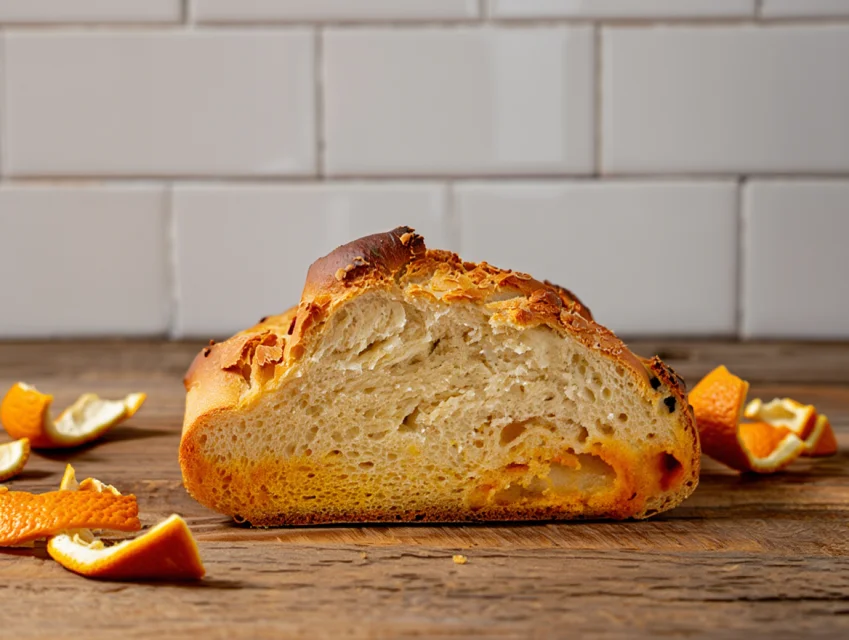
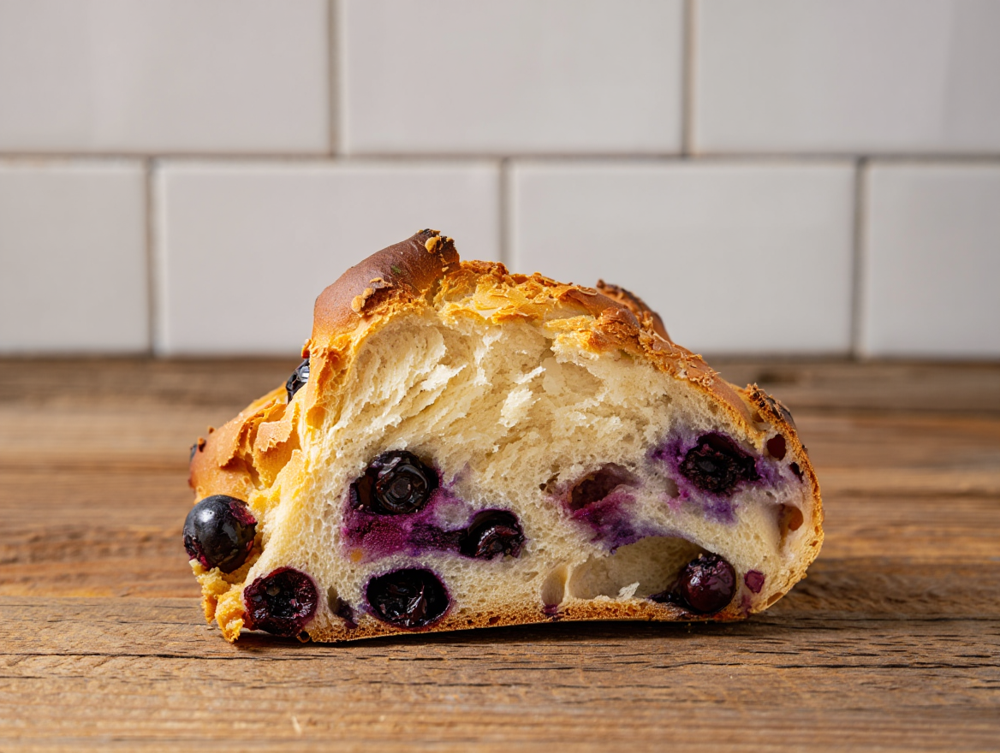
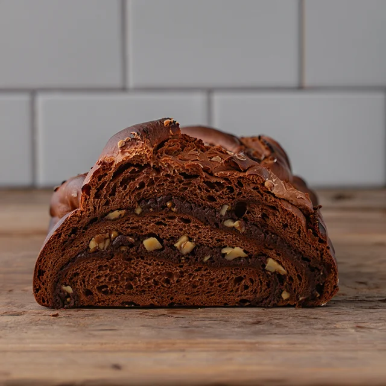
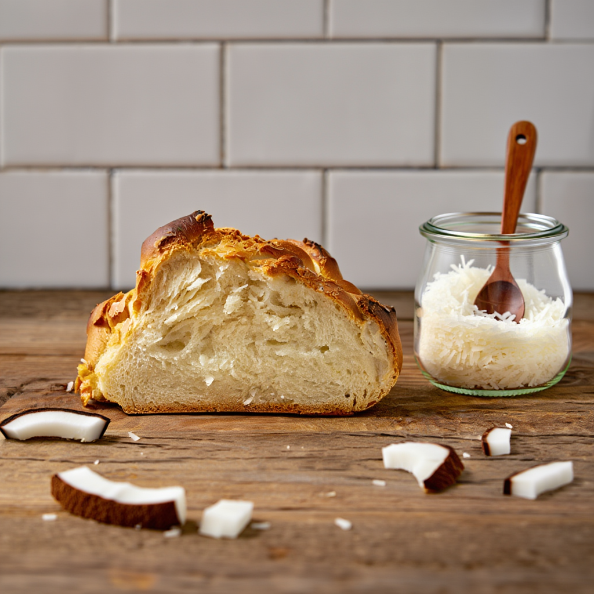
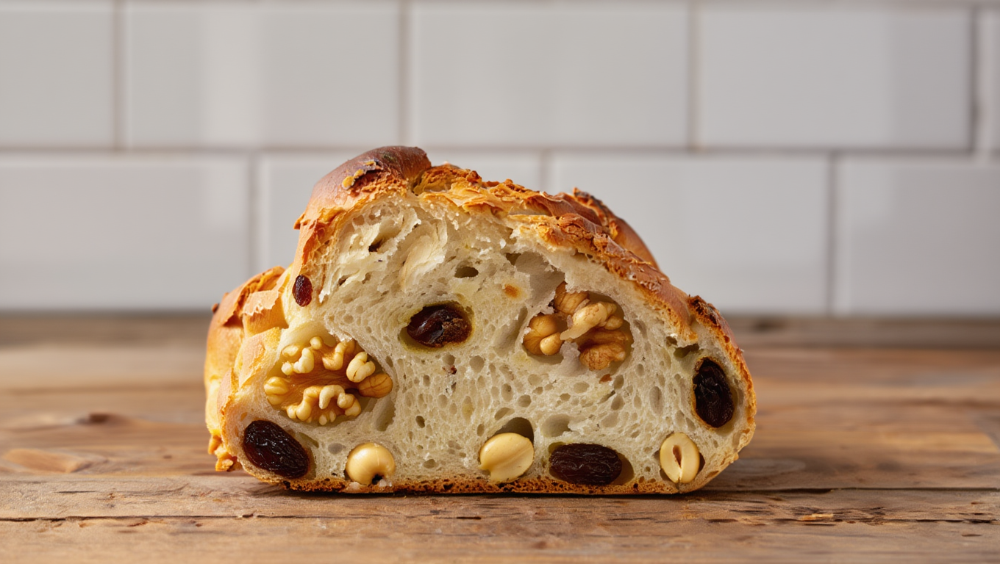

Nuestros Productos
Prepizzas: Sabor auténtico, calidad real y una experiencia única en cada bocado
En nuestra pequeña empresa familiar elaboramos prepizzas artesanales con una dedicación que se siente
en cada detalle. Nuestros productos nacen de una tradición panadera que combina técnicas artesanales,
ingredientes de primera calidad y un profundo respeto por los sabores reales.
Y si hay algo que nos distingue —algo que realmente hace que nuestros clientes vuelvan— es que
nuestras masas y salsas no se parecen a ninguna otra.
Mientras muchas prepizzas del mercado son duras, secas o demasiado industriales,
las nuestras tienen un carácter propio:
una masa suave, aireada y liviana,
con un equilibrio perfecto entre textura y sabor.
Una masa que sorprende desde el primer momento porque
no es “una más del montón”,
sino una base pensada para que cada pizza que hagas en casa
sea una experiencia diferente, memorable y, sobre todo, deliciosa.
A esto se suma nuestra salsa, preparada con tomates de verdad
—no puré de tomate, no salsas listas—.
Es una salsa casera, con cuerpo, aroma y un toque justo de condimentos
que realzan el sabor sin taparlo.
Este simple detalle hace que nuestras prepizzas tengan una personalidad propia:
sabores auténticos, caseros y de calidad gourmet.


Panes Gourmet
Pan de Naranja
Pan ligeramente dulce y aromático, elaborado con cáscara de naranja natural procesada artesanalmente para extraer todo su sabor.
Pan de Arándanos
Pan húmedo y suave, con el equilibrio perfecto entre lo dulce y lo ácido que aportan los arándanos.
Pan de Chocolate con Nueces
Clásico irresistible para amantes del chocolate y las nueces. Dulzor equilibrado y textura perfecta.
Pan de Coco
Pan aireado y suavemente dulce, con el toque característico del coco rallado.
Panettone
El clásico panettone, con una mezcla deliciosa de frutos secos y disecados: nueces, castañas, almendras, banana y ananá.
Pan de Semillas

Pan rico en fibra y textura, con un mix de semillas perfecto para quienes buscan sabor y nutrición.